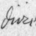

 The fourth and final part of the language definition file is taken up with rules on printing out messages and object names in the new language. The gender-number-animation (GNA) combination is considerably more important when printing nouns than when parsing them, because the player is less forgiving of errors. Few errors are as conspicuous or as painful as “You can see a gloves here.”, in which the library's list-writer has evidently used the wrong GNA for the gloves. Here is a more substantial example:
Volière
Une jungle superbe, avec des animaux et des arbres.
On peut voir ici trois oiseaux (une oie, un moineau et un cygne
blanc), cinq boîtes, une huître, Edith Piaf et des raisins.
To print this, the list-writer needs to know that “oie” is feminine singular, “cygne blanc” is masculine singular and so on. In short, it must be told the GNA of every object name it ever prints, or it will append all the wrong articles.
The translator will need first to decide how the
genders are to be used. Inform allows for three genders, called male,
female and neuter because they are usually used for
masculine, feminine and neuter genders. Different natural languages
will use these differently. In English, all nouns are neuter except
for those of people (and sometimes higher animals), when they follow
the gender of the person. Latin, German and Dutch use all three genders
without any very logical pattern, while French, Spanish and Italian
have no neuter. In Norwegian even the number of genders is a matter
of dialect: traditional Norwegian has two genders, “common”
and “neuter”, but more recently Norwegian has absorbed
a new feminine gender from its rural dialects. One way to achieve
this in Inform would be to use male for common,
female for the rural feminine and neuter for
neuter. To avoid confusion it might be worth making the definition
Attribute common alias male;
which makes common equivalent to writing
male. (The keyword alias is used, though
very seldom, for making alternative names for attributes and properties.)
Here's how the library determines the GNA of an
object's short name. The A part is easy: all objects having the
animate attribute are animate and all others are inanimate.
Similarly for the N part: objects having pluralname are
plural, all others singular. (An object having pluralname is nevertheless
only one object: for example an object called “doors”
which represents a pair of doubled doors, or “grapes”
representing a bunch of grapes.) If the object has male,
female or neuter then the short name has
masculine, feminine or neuter gender accordingly. If it has none of
these, then it defaults to the gender LanguageAnimateGender
if animate and LanguageInanimateGender otherwise.
(These are constants set by the language definition file: see (IV.1)
below.) You can
find the GNA associated with an object's short name
by calling the library routine
GetGNAOfObject(obj);
which returns the GNA number, 0 to 11.
•
EXERCISE 114
Devise a verb so that typing “gna frog” results in “frog:
animate singular neuter (GNA 2) / The frog / the frog / a frog”,
thus testing all possible articled and unarticled forms of the short name.
· · · · ·
In some languages, though not English, short names are inflected to make them agree with the kind of article applied to them:
das rote Buch the red book (German)
ein rotes Buch a red book
In printing as in parsing, the library variable
indef_mode holds true if an indefinite
article attaches to the noun phrase and false otherwise.
So one rather clumsy solution would be:
Object Buch
with ...
short_name [;
if (indef_mode) print "rotes Buch"; else print "rote Buch";
rtrue;
];
In fact, though, the library automatically looks
for a short_name_indef property when printing short
names in indefinite cases, and uses this instead of short_name.
So:
Object Buch with short_name "rote Buch", short_name_indef "rotes Buch";
An automatic system for regular inflections of short names is possible but not easy to get right.
In languages other than English, short names also
inflect with case, and the best way to handle this may be to provide
new printing rules like dative_the, enabling
the designer to write code like so:
"You give ", (the) noun, " to ", (dative_the) second, ".";
Part IV of a language definition file opens with declarations of the default gender constants mentioned above. "English.h" has
Constant LanguageAnimateGender = male; Constant LanguageInanimateGender = neuter;
whereas French would define both to be male.
Inform uses the term contraction form to mean a textual feature of a noun which causes any article in front of it to inflect. English has two contraction forms, “starting with a vowel” and “starting with a consonant”, affecting the indefinite article:
a + orange = an orange
a + banana = a banana
The first constant to define is the number of contraction forms in the language. In the case of "French.h" there will be two:
Constant LanguageContractionForms = 2;
Of these, form 0 means “starting with a consonant” and 1 means “starting with a vowel or mute h”. (It's up to you how you number these.) You also have to provide the routine that decides which contraction form a piece of text has. Here is an abbreviated version for French, abbreviated in that it omits to check accented vowels like ‘é’:
[ LanguageContraction text;
if (text->0 == 'a' or 'e' or 'i' or 'o' or 'u' or 'h' or
'A' or 'E' or 'I' or 'O' or 'U' or 'H') return 1;
return 0;
];
The text array holds the full text of the noun,
though this routine would normally only look at the first few letters
at most. The routine is only ever called when it is necessary to do so:
for instance, when the library prints “the eagles”,
LanguageContraction is not called because the article
would be the same regardless of whether “eagles” has
contraction form 0 or 1.
•
EXERCISE 115
Italian has three contraction forms: starting with a vowel, starting
with a ‘z’ or else ‘s’-followed-by-a-consonant,
and starting with a consonant. Write a suitable
LanguageContraction routine.
English needs two sets of articles: one set for singular nouns, which we shall call article set 0, another for plurals, article set 1. We need to define an array to show which GNAs result in which article set:
! a i
! s p s p
! m f n m f n m f n m f n
Array LanguageGNAsToArticles --> 0 0 0 1 1 1 0 0 0 1 1 1;
(The number of article sets is not defined as a constant, but instead by the contents of this array: here the only values are 0 and 1, so there need to be two article sets.) We also need to define the article sets themselves. There are three articles for each combination of contraction form and article set. For example, "English.h" has two contraction forms and two article sets, so we supply twelve articles:
Array LanguageArticles -->
! Contraction form 0: Contraction form 1:
! Cdef Def Indef Cdef Def Indef
"The " "the " "a " "The " "the " "an " ! Set 0
"The " "the " "some " "The " "the " "some "; ! Set 1
That defines the automatic rules used to apply articles
to nouns, but there are two ways to override this: the property article,
if present, specifies an explicit indefinite article for an object; and
the property articles, if present, specifies an explicit
set of three articles. This is useful for nouns whose articles are irregular,
such as the French “haricot”: the regular definite article
would be “l'haricot”, but by an accident of history “le
haricot” is correct, so:
Object "haricot" with articles "Le " "le " "un ", ...
•
EXERCISE 116
Construct suitable arrays for the regular French articles.
•
EXERCISE 117
Likewise for Italian, where Inform needs to be able to print a wider
selection: un, un', una, uno, i, il, gli, l', la, le, lo.
•
EXERCISE 118
At the other extreme, what if (like Latin: “vir” man
or a man or the man) a language has no articles?
Next is a routine called LanguageDirection
to print names for direction properties (not direction objects).
Imitate the following, from "French.h":
[ LanguageDirection d;
switch (d) {
n_to: print "nord"; s_to: print "sud";
e_to: print "est"; w_to: print "ouest";
ne_to: print "nordest"; nw_to: print "nordouest";
se_to: print "sudest"; sw_to: print "sudouest";
u_to: print "haut"; d_to: print "bas";
in_to: print "dans"; out_to: print "dehors";
default: RunTimeError(9,d);
}
];
Next is a routine called LanguageNumber
which takes a number N and prints it out in textual form.
N can be anything from -32767 to 32767
and the correct text should be printed in every case. In most languages
a recursive approach makes this routine less enormous than it might sound.
•
EXERCISE 119
Write LanguageNumber for French.
Even mostly numeric representations of the time
of day vary from language to language: when it's 1:23 pm in England,
it's 13h23 in France. A routine called LanguageTimeOfDay
should print out the language's preferred form of the time of day,
like so:
[ LanguageTimeOfDay hours mins; print hours/10, hours%10, "h", mins/10, mins%10; ];
•
EXERCISE 120
Write the corresponding English version.
The parser sometimes needs to print verbs out, in messages like:
I only understood you as far as wanting to take the red box.
It normally does this by simply printing out the verb's dictionary entry. However, dictionary entries tend to be cut short (to the first 9 letters or so) or else to be abbreviations (rather as “i” means “inventory”). In your language, verbs might also need to inflect in a sentence like the one above, which assumes that the infinitive and imperative are the same. You might get around that by rewording the statement as:
I only understood you as far as “take the red box”.
Even so, how to print out verbs depends on the language,
so you need to give a routine called LanguageVerb which
looks at its argument and either prints a textual form and returns
true, or returns false to let the library carry on as normal. In English,
only a few of the more commonly-used abbreviations are glossed, and
“x” for “examine” is the only one that really matters:
[ LanguageVerb verb_word;
switch (verb_word) {
'l//': print "look";
'z//': print "wait";
'x//': print "examine";
'i//', 'inv', 'inventory': print "inventory";
default: rfalse;
}
rtrue;
];
Next, a batch of definitions should be made to specify the look of menus and which keys on the keyboard navigate through them. Imitate the following "English.h" definitions, if possible keeping the strings the same length (padding out with spaces if your translations are shorter than the English original):
Constant NKEY__TX = "N = next subject"; Constant PKEY__TX = "P = previous"; Constant QKEY1__TX = " Q = resume game"; Constant QKEY2__TX = "Q = previous menu"; Constant RKEY__TX = "RETURN = read subject"; Constant NKEY1__KY = 'N'; Constant NKEY2__KY = 'n'; Constant PKEY1__KY = 'P'; Constant PKEY2__KY = 'p'; Constant QKEY1__KY = 'Q'; Constant QKEY2__KY = 'q';
These are phrases or words so short that the author
decided they probably weren't worth putting in the LibraryMessages
system (he now thinks otherwise: code in haste, repent at leisure). Here
are some French versions with notes.
Constant SCORE__TX = "Score: "; Constant MOVES__TX = "Tours: "; Constant TIME__TX = "Heure: ";
which define the text printed on the status line: in English, “Score” and “Turns” or “Time”;
Constant CANTGO__TX = "On ne peut pas aller en ce direction.";
the default “You can't go that way” message;
Constant FORMER__TX = "votre m@^eme ancien";
the short name of the player's former self, after the
player has become somebody else by use of the ChangePlayer
routine;
Constant YOURSELF__TX = "votre m@^eme";
the short name of the player object;
Constant DARKNESS__TX = "Obscurit@'e";
the short name of a location in darkness;
Constant NOTHING__TX = "rien";
the short name of the nothing object,
caused by print (name) 0;, which is not strictly speaking
legal anyway;
Constant THAT__TX = "@cca"; Constant THOSET__TX = "ces choses";
(THOSET stands for “those things”)
used in command printing. There are three circumstances in which all or
part of a command can be printed by the parser: for an incomplete command,
a vague command or an overlong one. Thus
>take out
What do you want to take out?
>give frog
(to Professor Moriarty)
>take frog within cage
I only understood you as far as wanting to take the frog.
In such messages, the THOSET__TX text
is printed in place of a multiple object like “all” while
THAT__TX is printed in place of a number or of something
not well understood by the parser, like the result of a topic
token.
Constant OR__TX = " ou ";
appears in the list of objects being printed in a question asking you which thing you mean: if you can't find anything grammatical to go here, try using just ", ";
Constant AND__TX = " et ";
used to divide up many kinds of list;
Constant WHOM__TX = "qui "; Constant WHICH__TX = "lequel "; Constant IS2__TX = "est "; Constant ARE2__TX = "sont ";
used only to print text like “inside which is a duck”, “on top of whom are two drakes”;
Constant IS__TX = " est"; Constant ARE__TX = " sont";
used only by the list-maker and only when the
ISARE_BIT is set; the library only does this from
within LibraryMessages, so you can avoid the need altogether.
Finally, Part IV contains an extensive block of translated library messages, making up at least half the bulk of the language definition file. Here is the entry for a typical verb in "English.h":
SwitchOn:
switch (n) {
1: print_ret (ctheyreorthats) x1,
" not something you can switch.";
2: print_ret (ctheyreorthats) x1,
" already on.";
3: "You switch ", (the) x1, " on.";
}
You have to translate every one of these messages to at least a near equivalent. It may be useful to define new printing rules, just as "English.h" does:
[ CTheyreorThats obj;
if (obj == player) { print "You're"; return; }
if (obj has pluralname) { print "They're"; return; }
if (obj has animate)
{ if (obj has female) { print "She's"; return; }
else if (obj hasnt neuter) { print "He's"; return; }
}
print "That's";
];
•
EXERCISE 121
Write a printing rule called FrenchNominativePronoun
which prints the right one out of il, elle, ils, elles.
•
REFERENCES
Andreas Hoppler's alternative list-writing library extension
"Lister.h" is partly designed to make it easier for
inflected languages to print out lists.